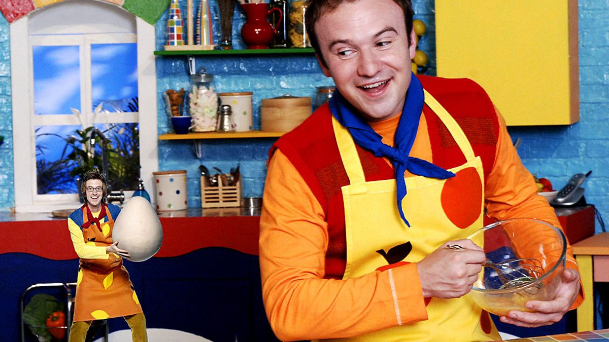

Our Story
The Muffin Man began as a small dream in a central Newcastle location. Founded in 2018 by Callum Turnbull, a passionate baker with a love for muffins, our bakery has grown into a local favorite. We use only the finest ingredients to craft our treats, bringing warmth and joy to every bite.

Visit us to experience the magic of homemade baking!